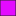
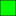

<!doctype html>
<html lang="en">
    <head>
        <meta charset="utf-8">
        <meta http-equiv="X-UA-Compatible" content="IE=edge">
        <meta name="viewport" content="initial-scale=1,user-scalable=no,maximum-scale=1,width=device-width">
        <meta name="mobile-web-app-capable" content="yes">
        <meta name="apple-mobile-web-app-capable" content="yes">
        <link rel="stylesheet" href="css/leaflet.css">
        <link rel="stylesheet" href="css/qgis2web.css"><link rel="stylesheet" href="css/fontawesome-all.min.css">
        <link rel="stylesheet" href="css/leaflet-measure.css">
        <style>
        html, body, #map {
            width: 100%;
            height: 100%;
            padding: 0;
            margin: 0;
        }
        </style>
        <title></title>
    </head>
    <body>
        <div id="map">
        </div>
        <script src="js/qgis2web_expressions.js"></script>
        <script src="js/leaflet.js"></script>
        <script src="js/leaflet-svg-shape-markers.min.js"></script>
        <script src="js/leaflet.rotatedMarker.js"></script>
        <script src="js/leaflet.pattern.js"></script>
        <script src="js/leaflet-hash.js"></script>
        <script src="js/Autolinker.min.js"></script>
        <script src="js/rbush.min.js"></script>
        <script src="js/labelgun.min.js"></script>
        <script src="js/labels.js"></script>
        <script src="js/leaflet-measure.js"></script>
        <script src="data/IsodistaSyscoCostadelEste_2.js"></script>
        <script src="data/IsodistaSyscoCostaVerde_3.js"></script>
        <script src="data/IsodistaSyscoElDorado_4.js"></script>
        <script src="data/IsodistaSyscoLosPueblos_5.js"></script>
        <script src="data/IsodistaSyscoPaitilla_6.js"></script>
        <script src="data/SYSCOPANAMA_7.js"></script>
        <script>
        var map = L.map('map', {
            zoomControl:true, maxZoom:28, minZoom:1
        }).fitBounds([[8.770853908892624,-79.87159075362418],[9.159866308892608,-79.26431367818795]]);
        var hash = new L.Hash(map);
        map.attributionControl.setPrefix('<a href="https://github.com/tomchadwin/qgis2web" target="_blank">qgis2web</a> &middot; <a href="https://leafletjs.com" title="A JS library for interactive maps">Leaflet</a> &middot; <a href="https://qgis.org">QGIS</a>');
        var autolinker = new Autolinker({truncate: {length: 30, location: 'smart'}});
        var measureControl = new L.Control.Measure({
            position: 'topleft',
            primaryLengthUnit: 'meters',
            secondaryLengthUnit: 'kilometers',
            primaryAreaUnit: 'sqmeters',
            secondaryAreaUnit: 'hectares'
        });
        measureControl.addTo(map);
        document.getElementsByClassName('leaflet-control-measure-toggle')[0]
        .innerHTML = '';
        document.getElementsByClassName('leaflet-control-measure-toggle')[0]
        .className += ' fas fa-ruler';
        var bounds_group = new L.featureGroup([]);
        function setBounds() {
        }
        map.createPane('pane_GoogleHybrid_0');
        map.getPane('pane_GoogleHybrid_0').style.zIndex = 400;
        var layer_GoogleHybrid_0 = L.tileLayer('https://mt1.google.com/vt/lyrs=y&x={x}&y={y}&z={z}', {
            pane: 'pane_GoogleHybrid_0',
            opacity: 1.0,
            attribution: '<a href="https://www.google.at/permissions/geoguidelines/attr-guide.html">Map data ©2015 Google</a>',
            minZoom: 1,
            maxZoom: 28,
            minNativeZoom: 0,
            maxNativeZoom: 20
        });
        layer_GoogleHybrid_0;
        map.addLayer(layer_GoogleHybrid_0);
        map.createPane('pane_CartoDB_1');
        map.getPane('pane_CartoDB_1').style.zIndex = 401;
        var layer_CartoDB_1 = L.tileLayer('http://a.basemaps.cartocdn.com/light_all/{z}/{x}/{y}@2x.png', {
            pane: 'pane_CartoDB_1',
            opacity: 1.0,
            attribution: '<a href="https://cartodb.com/basemaps/">Map tiles by CartoDB, under CC BY 3.0. Data by OpenStreetMap, under ODbL.</a>',
            minZoom: 1,
            maxZoom: 28,
            minNativeZoom: 0,
            maxNativeZoom: 20
        });
        layer_CartoDB_1;
        map.addLayer(layer_CartoDB_1);
        function pop_IsodistaSyscoCostadelEste_2(feature, layer) {
            var popupContent = '<table>\
                    <tr>\
                        <td colspan="2">' + (feature.properties['fid'] !== null ? autolinker.link(feature.properties['fid'].toLocaleString()) : '') + '</td>\
                    </tr>\
                    <tr>\
                        <td colspan="2">' + (feature.properties['Distancia_m'] !== null ? autolinker.link(feature.properties['Distancia_m'].toLocaleString()) : '') + '</td>\
                    </tr>\
                    <tr>\
                        <td colspan="2">' + (feature.properties['area'] !== null ? autolinker.link(feature.properties['area'].toLocaleString()) : '') + '</td>\
                    </tr>\
                </table>';
            layer.bindPopup(popupContent, {maxHeight: 400});
        }

        function style_IsodistaSyscoCostadelEste_2_0() {
            return {
                pane: 'pane_IsodistaSyscoCostadelEste_2',
                opacity: 1,
                color: 'rgba(35,35,35,1.0)',
                dashArray: '',
                lineCap: 'butt',
                lineJoin: 'miter',
                weight: 1.0, 
                fill: true,
                fillOpacity: 1,
                fillColor: 'rgba(54,87,254,1.0)',
                interactive: true,
            }
        }
        map.createPane('pane_IsodistaSyscoCostadelEste_2');
        map.getPane('pane_IsodistaSyscoCostadelEste_2').style.zIndex = 402;
        map.getPane('pane_IsodistaSyscoCostadelEste_2').style['mix-blend-mode'] = 'multiply';
        var layer_IsodistaSyscoCostadelEste_2 = new L.geoJson(json_IsodistaSyscoCostadelEste_2, {
            attribution: '',
            interactive: true,
            dataVar: 'json_IsodistaSyscoCostadelEste_2',
            layerName: 'layer_IsodistaSyscoCostadelEste_2',
            pane: 'pane_IsodistaSyscoCostadelEste_2',
            onEachFeature: pop_IsodistaSyscoCostadelEste_2,
            style: style_IsodistaSyscoCostadelEste_2_0,
        });
        bounds_group.addLayer(layer_IsodistaSyscoCostadelEste_2);
        map.addLayer(layer_IsodistaSyscoCostadelEste_2);
        function pop_IsodistaSyscoCostaVerde_3(feature, layer) {
            var popupContent = '<table>\
                    <tr>\
                        <td colspan="2">' + (feature.properties['fid'] !== null ? autolinker.link(feature.properties['fid'].toLocaleString()) : '') + '</td>\
                    </tr>\
                    <tr>\
                        <td colspan="2">' + (feature.properties['distancia_m'] !== null ? autolinker.link(feature.properties['distancia_m'].toLocaleString()) : '') + '</td>\
                    </tr>\
                    <tr>\
                        <td colspan="2">' + (feature.properties['area'] !== null ? autolinker.link(feature.properties['area'].toLocaleString()) : '') + '</td>\
                    </tr>\
                </table>';
            layer.bindPopup(popupContent, {maxHeight: 400});
        }

        function style_IsodistaSyscoCostaVerde_3_0() {
            return {
                pane: 'pane_IsodistaSyscoCostaVerde_3',
                opacity: 1,
                color: 'rgba(35,35,35,1.0)',
                dashArray: '',
                lineCap: 'butt',
                lineJoin: 'miter',
                weight: 1.0, 
                fill: true,
                fillOpacity: 1,
                fillColor: 'rgba(5,255,0,1.0)',
                interactive: true,
            }
        }
        map.createPane('pane_IsodistaSyscoCostaVerde_3');
        map.getPane('pane_IsodistaSyscoCostaVerde_3').style.zIndex = 403;
        map.getPane('pane_IsodistaSyscoCostaVerde_3').style['mix-blend-mode'] = 'multiply';
        var layer_IsodistaSyscoCostaVerde_3 = new L.geoJson(json_IsodistaSyscoCostaVerde_3, {
            attribution: '',
            interactive: true,
            dataVar: 'json_IsodistaSyscoCostaVerde_3',
            layerName: 'layer_IsodistaSyscoCostaVerde_3',
            pane: 'pane_IsodistaSyscoCostaVerde_3',
            onEachFeature: pop_IsodistaSyscoCostaVerde_3,
            style: style_IsodistaSyscoCostaVerde_3_0,
        });
        bounds_group.addLayer(layer_IsodistaSyscoCostaVerde_3);
        map.addLayer(layer_IsodistaSyscoCostaVerde_3);
        function pop_IsodistaSyscoElDorado_4(feature, layer) {
            var popupContent = '<table>\
                    <tr>\
                        <td colspan="2">' + (feature.properties['fid'] !== null ? autolinker.link(feature.properties['fid'].toLocaleString()) : '') + '</td>\
                    </tr>\
                    <tr>\
                        <td colspan="2">' + (feature.properties['distancia_m'] !== null ? autolinker.link(feature.properties['distancia_m'].toLocaleString()) : '') + '</td>\
                    </tr>\
                    <tr>\
                        <td colspan="2">' + (feature.properties['area'] !== null ? autolinker.link(feature.properties['area'].toLocaleString()) : '') + '</td>\
                    </tr>\
                </table>';
            layer.bindPopup(popupContent, {maxHeight: 400});
        }

        function style_IsodistaSyscoElDorado_4_0() {
            return {
                pane: 'pane_IsodistaSyscoElDorado_4',
                opacity: 1,
                color: 'rgba(35,35,35,1.0)',
                dashArray: '',
                lineCap: 'butt',
                lineJoin: 'miter',
                weight: 1.0, 
                fill: true,
                fillOpacity: 1,
                fillColor: 'rgba(255,227,11,1.0)',
                interactive: true,
            }
        }
        map.createPane('pane_IsodistaSyscoElDorado_4');
        map.getPane('pane_IsodistaSyscoElDorado_4').style.zIndex = 404;
        map.getPane('pane_IsodistaSyscoElDorado_4').style['mix-blend-mode'] = 'multiply';
        var layer_IsodistaSyscoElDorado_4 = new L.geoJson(json_IsodistaSyscoElDorado_4, {
            attribution: '',
            interactive: true,
            dataVar: 'json_IsodistaSyscoElDorado_4',
            layerName: 'layer_IsodistaSyscoElDorado_4',
            pane: 'pane_IsodistaSyscoElDorado_4',
            onEachFeature: pop_IsodistaSyscoElDorado_4,
            style: style_IsodistaSyscoElDorado_4_0,
        });
        bounds_group.addLayer(layer_IsodistaSyscoElDorado_4);
        map.addLayer(layer_IsodistaSyscoElDorado_4);
        function pop_IsodistaSyscoLosPueblos_5(feature, layer) {
            var popupContent = '<table>\
                    <tr>\
                        <td colspan="2">' + (feature.properties['fid'] !== null ? autolinker.link(feature.properties['fid'].toLocaleString()) : '') + '</td>\
                    </tr>\
                    <tr>\
                        <td colspan="2">' + (feature.properties['distancia_m'] !== null ? autolinker.link(feature.properties['distancia_m'].toLocaleString()) : '') + '</td>\
                    </tr>\
                    <tr>\
                        <td colspan="2">' + (feature.properties['area'] !== null ? autolinker.link(feature.properties['area'].toLocaleString()) : '') + '</td>\
                    </tr>\
                </table>';
            layer.bindPopup(popupContent, {maxHeight: 400});
        }

        function style_IsodistaSyscoLosPueblos_5_0() {
            return {
                pane: 'pane_IsodistaSyscoLosPueblos_5',
                opacity: 1,
                color: 'rgba(35,35,35,1.0)',
                dashArray: '',
                lineCap: 'butt',
                lineJoin: 'miter',
                weight: 1.0, 
                fill: true,
                fillOpacity: 1,
                fillColor: 'rgba(220,0,70,1.0)',
                interactive: true,
            }
        }
        map.createPane('pane_IsodistaSyscoLosPueblos_5');
        map.getPane('pane_IsodistaSyscoLosPueblos_5').style.zIndex = 405;
        map.getPane('pane_IsodistaSyscoLosPueblos_5').style['mix-blend-mode'] = 'multiply';
        var layer_IsodistaSyscoLosPueblos_5 = new L.geoJson(json_IsodistaSyscoLosPueblos_5, {
            attribution: '',
            interactive: true,
            dataVar: 'json_IsodistaSyscoLosPueblos_5',
            layerName: 'layer_IsodistaSyscoLosPueblos_5',
            pane: 'pane_IsodistaSyscoLosPueblos_5',
            onEachFeature: pop_IsodistaSyscoLosPueblos_5,
            style: style_IsodistaSyscoLosPueblos_5_0,
        });
        bounds_group.addLayer(layer_IsodistaSyscoLosPueblos_5);
        map.addLayer(layer_IsodistaSyscoLosPueblos_5);
        function pop_IsodistaSyscoPaitilla_6(feature, layer) {
            var popupContent = '<table>\
                    <tr>\
                        <td colspan="2">' + (feature.properties['fid'] !== null ? autolinker.link(feature.properties['fid'].toLocaleString()) : '') + '</td>\
                    </tr>\
                    <tr>\
                        <td colspan="2">' + (feature.properties['distancia_m'] !== null ? autolinker.link(feature.properties['distancia_m'].toLocaleString()) : '') + '</td>\
                    </tr>\
                    <tr>\
                        <td colspan="2">' + (feature.properties['area'] !== null ? autolinker.link(feature.properties['area'].toLocaleString()) : '') + '</td>\
                    </tr>\
                </table>';
            layer.bindPopup(popupContent, {maxHeight: 400});
        }

        function style_IsodistaSyscoPaitilla_6_0() {
            return {
                pane: 'pane_IsodistaSyscoPaitilla_6',
                opacity: 1,
                color: 'rgba(35,35,35,1.0)',
                dashArray: '',
                lineCap: 'butt',
                lineJoin: 'miter',
                weight: 1.0, 
                fill: true,
                fillOpacity: 1,
                fillColor: 'rgba(227,11,255,1.0)',
                interactive: true,
            }
        }
        map.createPane('pane_IsodistaSyscoPaitilla_6');
        map.getPane('pane_IsodistaSyscoPaitilla_6').style.zIndex = 406;
        map.getPane('pane_IsodistaSyscoPaitilla_6').style['mix-blend-mode'] = 'multiply';
        var layer_IsodistaSyscoPaitilla_6 = new L.geoJson(json_IsodistaSyscoPaitilla_6, {
            attribution: '',
            interactive: true,
            dataVar: 'json_IsodistaSyscoPaitilla_6',
            layerName: 'layer_IsodistaSyscoPaitilla_6',
            pane: 'pane_IsodistaSyscoPaitilla_6',
            onEachFeature: pop_IsodistaSyscoPaitilla_6,
            style: style_IsodistaSyscoPaitilla_6_0,
        });
        bounds_group.addLayer(layer_IsodistaSyscoPaitilla_6);
        map.addLayer(layer_IsodistaSyscoPaitilla_6);
        function pop_SYSCOPANAMA_7(feature, layer) {
            var popupContent = '<table>\
                    <tr>\
                        <td colspan="2">' + (feature.properties['id'] !== null ? autolinker.link(feature.properties['id'].toLocaleString()) : '') + '</td>\
                    </tr>\
                    <tr>\
                        <td colspan="2">' + (feature.properties['name'] !== null ? autolinker.link(feature.properties['name'].toLocaleString()) : '') + '</td>\
                    </tr>\
                    <tr>\
                        <td colspan="2">' + (feature.properties['lng'] !== null ? autolinker.link(feature.properties['lng'].toLocaleString()) : '') + '</td>\
                    </tr>\
                    <tr>\
                        <td colspan="2">' + (feature.properties['lat'] !== null ? autolinker.link(feature.properties['lat'].toLocaleString()) : '') + '</td>\
                    </tr>\
                    <tr>\
                        <td colspan="2">' + (feature.properties['provincia'] !== null ? autolinker.link(feature.properties['provincia'].toLocaleString()) : '') + '</td>\
                    </tr>\
                    <tr>\
                        <td colspan="2">' + (feature.properties['distrito'] !== null ? autolinker.link(feature.properties['distrito'].toLocaleString()) : '') + '</td>\
                    </tr>\
                    <tr>\
                        <td colspan="2">' + (feature.properties['corregimientos'] !== null ? autolinker.link(feature.properties['corregimientos'].toLocaleString()) : '') + '</td>\
                    </tr>\
                    <tr>\
                        <td colspan="2">' + (feature.properties['codigo_dta'] !== null ? autolinker.link(feature.properties['codigo_dta'].toLocaleString()) : '') + '</td>\
                    </tr>\
                    <tr>\
                        <td colspan="2">' + (feature.properties['conurbanos'] !== null ? autolinker.link(feature.properties['conurbanos'].toLocaleString()) : '') + '</td>\
                    </tr>\
                    <tr>\
                        <td colspan="2">' + (feature.properties['address'] !== null ? autolinker.link(feature.properties['address'].toLocaleString()) : '') + '</td>\
                    </tr>\
                </table>';
            layer.bindPopup(popupContent, {maxHeight: 400});
        }

        function style_SYSCOPANAMA_7_0() {
            return {
                pane: 'pane_SYSCOPANAMA_7',
                shape: 'triangle',
                radius: 5.6,
                opacity: 1,
                color: 'rgba(255,255,255,1.0)',
                dashArray: '',
                lineCap: 'butt',
                lineJoin: 'miter',
                weight: 2.0,
                fill: true,
                fillOpacity: 1,
                fillColor: 'rgba(0,0,0,1.0)',
                interactive: true,
            }
        }
        map.createPane('pane_SYSCOPANAMA_7');
        map.getPane('pane_SYSCOPANAMA_7').style.zIndex = 407;
        map.getPane('pane_SYSCOPANAMA_7').style['mix-blend-mode'] = 'normal';
        var layer_SYSCOPANAMA_7 = new L.geoJson(json_SYSCOPANAMA_7, {
            attribution: '',
            interactive: true,
            dataVar: 'json_SYSCOPANAMA_7',
            layerName: 'layer_SYSCOPANAMA_7',
            pane: 'pane_SYSCOPANAMA_7',
            onEachFeature: pop_SYSCOPANAMA_7,
            pointToLayer: function (feature, latlng) {
                var context = {
                    feature: feature,
                    variables: {}
                };
                return L.shapeMarker(latlng, style_SYSCOPANAMA_7_0(feature));
            },
        });
        bounds_group.addLayer(layer_SYSCOPANAMA_7);
        map.addLayer(layer_SYSCOPANAMA_7);
        var baseMaps = {"Google Hybrid": layer_GoogleHybrid_0,"CartoDB": layer_CartoDB_1,};
        L.control.layers(baseMaps,{' SYSCO PANAMA': layer_SYSCOPANAMA_7,' Isodista Sysco Paitilla': layer_IsodistaSyscoPaitilla_6,' Isodista Sysco Los Pueblos': layer_IsodistaSyscoLosPueblos_5,' Isodista Sysco El Dorado': layer_IsodistaSyscoElDorado_4,' Isodista Sysco Costa Verde': layer_IsodistaSyscoCostaVerde_3,' Isodista Sysco Costa del Este': layer_IsodistaSyscoCostadelEste_2,},{collapsed:false}).addTo(map);
        setBounds();
        var i = 0;
        layer_SYSCOPANAMA_7.eachLayer(function(layer) {
            var context = {
                feature: layer.feature,
                variables: {}
            };
            layer.bindTooltip((layer.feature.properties['name'] !== null?String('<div style="color: #323232; font-size: 10pt; font-family: \'Arial\', sans-serif;">' + layer.feature.properties['name']) + '</div>':''), {permanent: true, offset: [-0, -16], className: 'css_SYSCOPANAMA_7'});
            labels.push(layer);
            totalMarkers += 1;
              layer.added = true;
              addLabel(layer, i);
              i++;
        });
        resetLabels([layer_SYSCOPANAMA_7]);
        map.on("zoomend", function(){
            resetLabels([layer_SYSCOPANAMA_7]);
        });
        map.on("layeradd", function(){
            resetLabels([layer_SYSCOPANAMA_7]);
        });
        map.on("layerremove", function(){
            resetLabels([layer_SYSCOPANAMA_7]);
        });
        </script>
    </body>
</html>
